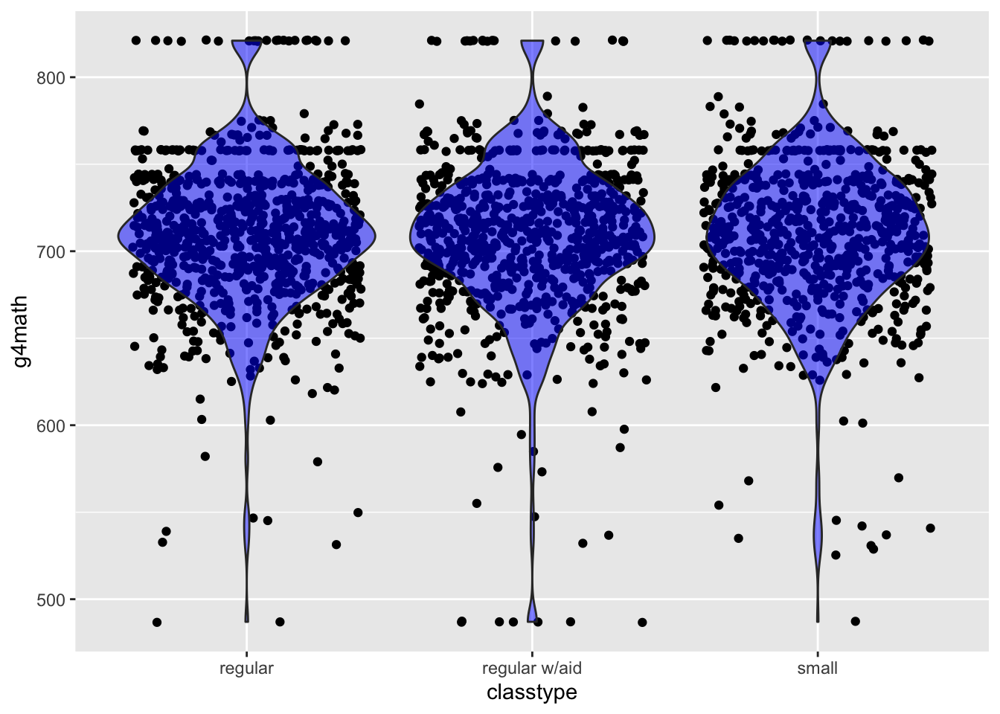
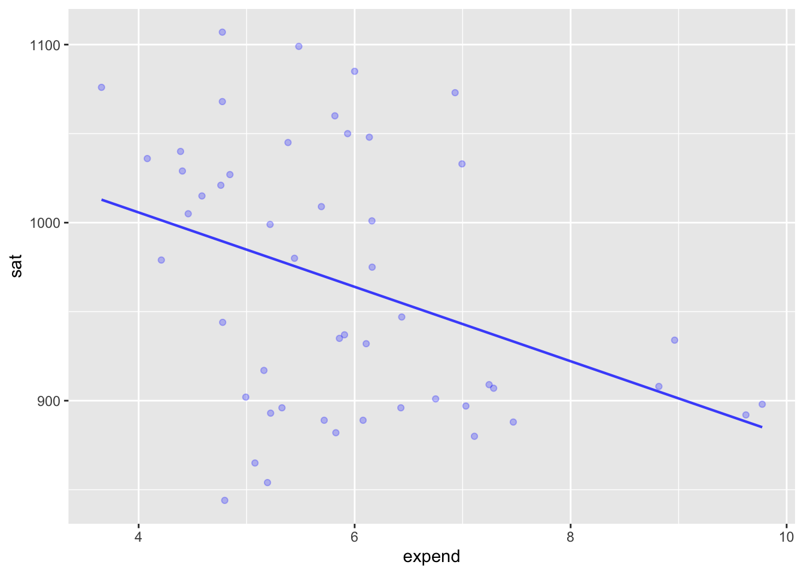
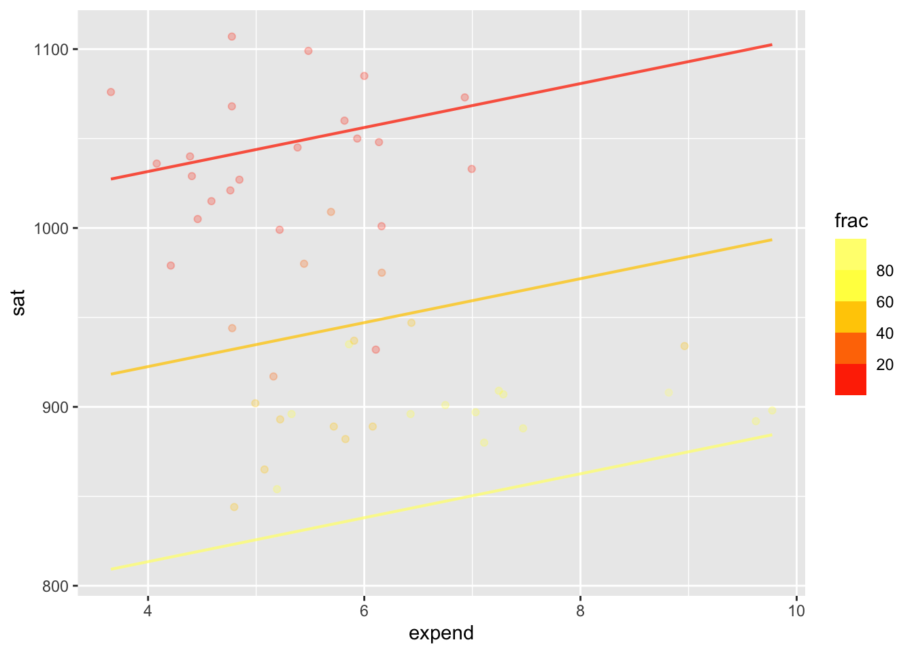

ggplot(MPG, aes(x = fuel_year, y = CO2_year)) +
geom_jitter(alpha=.3)
Math300Z
You have been learning some basics of data wrangling and visualization, along with what ModernDive calls “basic regression” and “multiple regression.” These are tools which you will continue to use in the second half of the semester.
Such tools are necessary but usually not sufficient. Data only occasionally speak for themselves. Most often, we need to interpret data in the context of what we already know or believe about the system under study.
Example: As you’ve seen, merely fitting a regression model does not demonstrate that there is a causal relationship between the explanatory variables and the response variable. We will need some new concepts to encode our ideas (and speculations) about causal relationships and to use regression modeling to inform (or contradict) our ideas.
Example: We’ll see how to avoid seeing patterns and relationships for which the evidence in unpersuasive. Example: We will see how detection thresholds can be set to reflect our opinions about the costs and benefits of different ways of getting it right or wrong and our prior knowledge of the frequency of different kinds of events.
The point of regression modeling is to detect and quantify patterns of relationship between variables. Sometimes simple data graphics are enough to display a pattern. For instance, let’s look at some Department of Transportation data on models of cars stored in the MPG data frame. We will start by looking at the link between fuel economy and CO_2_ production.
ggplot(MPG, aes(x = fuel_year, y = CO2_year)) +
geom_jitter(alpha=.3)
This is a very strong pattern. fuel_year and CO2_year are practically the same thing.
Other times, patterns are hidden by extreme variability in the data. For instance, here are data on the effect of kindergarden class size on student outcomes.
ggplot(STAR, aes(x=classtype, y=g4math)) + geom_jitter() + geom_violin(alpha=.5, fill="blue")
Regression modeling is a technique for looking for simple forms of patterns in the relationships among variables. It is not the only such technique, but it is by far the most widely used in practice across diverse fields.
We will use only regression modeling (and allied methods) in this course. You may have heard about other methods such as “deep learning” or “neural networks,” but regression modeling is the basis for most of the others.
It’s critically important that you understand the framework for regression modeling.
l comes in the function lm() that you will be using again and again in this course.lm(), you specify which variables you want in the explanatory role and which single variable you have selected to be the response variable. The computer language syntax is very simple:
response ~ var1 + var2 + ...+ between the names of explanatory variables is mostly just punctuation. You can read it as “and”.Since the distinction between the response and the explanatory variables is so central, we are going to enforce a graphical style that reflects the distinction.
In the ggplot2 graphics system, this policy will appear like this:
ggplot(Dataframe, aes(y=response, x=var1, color=var2)) + geom_jitter() or geom_point() and so on.
We have been working a lot with data frames. Now we are going to add a new type of R object, which we can call a “model”. A model is NOT a data frame, it is a different kind of thing with different properties and different operations.
Making a model:
mod1 <- lm(sat~ expend, data=SAT)Operations we will perform on models:
Graph the model (and usually the data used for training)
::: {.cell}
model_plot(mod1)::: {.cell-output-display}  ::: :::
Being able to use multiple explanatory variables allows us to see patterns that may be subtle.
mod2 <- lm(sat ~ expend + frac, data=SAT)
model_plot(mod2)Warning: Ignoring unknown aesthetics: fill
conf_interval() and R2()mod2 |> conf_interval()# A tibble: 3 × 4
term .lwr .coef .upr
<chr> <dbl> <dbl> <dbl>
1 (Intercept) 950. 994. 1038.
2 expend 3.79 12.3 20.8
3 frac -3.28 -2.85 -2.42mod2 |> R2() n k Rsquared F adjR2 p df.num df.denom
1 50 2 0.8194726 106.6741 0.8117906 0 2 47Evaluate the model at each of the rows of the training data.
::: {.cell}
model_eval(mod2) |> head()::: {.cell-output .cell-output-stderr} Using training data as input to model_eval(). :::
::: {.cell-output .cell-output-stdout} .response expend frac .output .resid .lwr .upr 1 1029 4.405 8 1025.1463 3.853661 958.2677 1092.0250 2 934 8.963 47 969.9621 -35.962052 900.0065 1039.9176 3 944 4.778 27 975.5616 -31.561556 909.1283 1041.9948 4 1005 4.459 6 1031.5117 -26.511670 964.6071 1098.4162 5 902 4.992 45 926.8741 -24.874145 860.0437 993.7046 6 980 5.443 29 978.0302 1.969768 912.0035 1044.0570 ::: :::
A definition of “statistical thinking” from the book:
Statistic thinking is the accounting for variation in the context of what remains unaccounted for.
Implicit in this definition is a pathway for learning to think statistically:
Today: How to measure variation.
Consider some closely related words: variable, variation, vary, various, variety, variant. The root is vari.
Our preferred way to measure the amount of variation numerically: the variance, a single number, always positive.
var() within summarize() r DF |> summarize(NM = var(VAR))get_lesson_worksheet(19) or whatever the lesson number is.